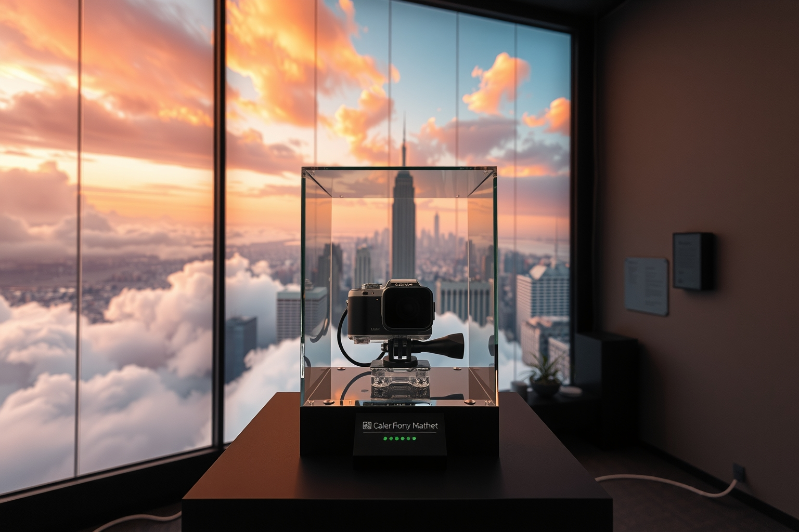
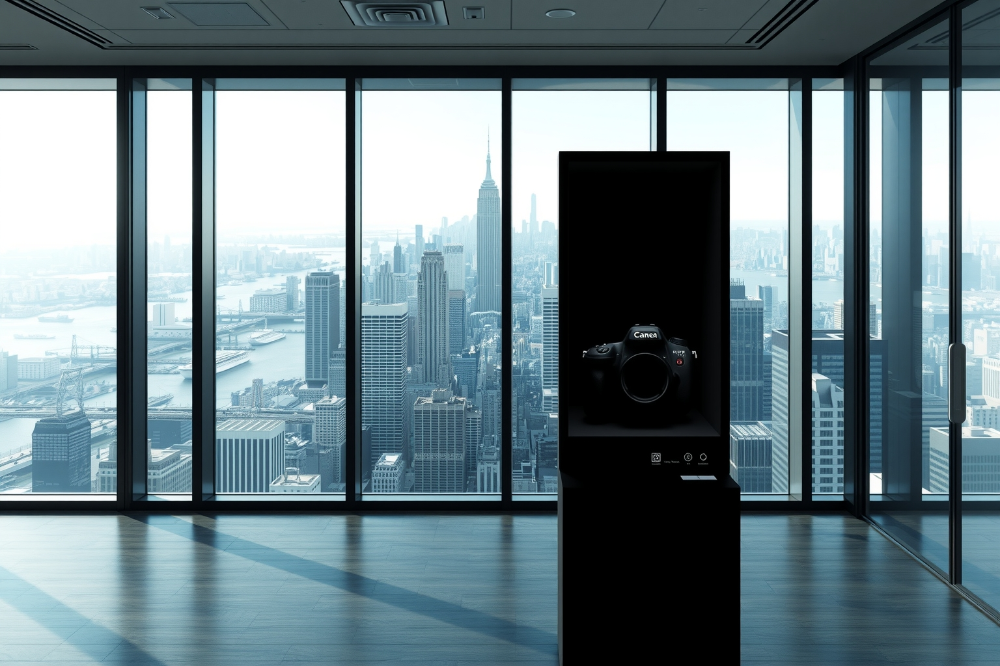
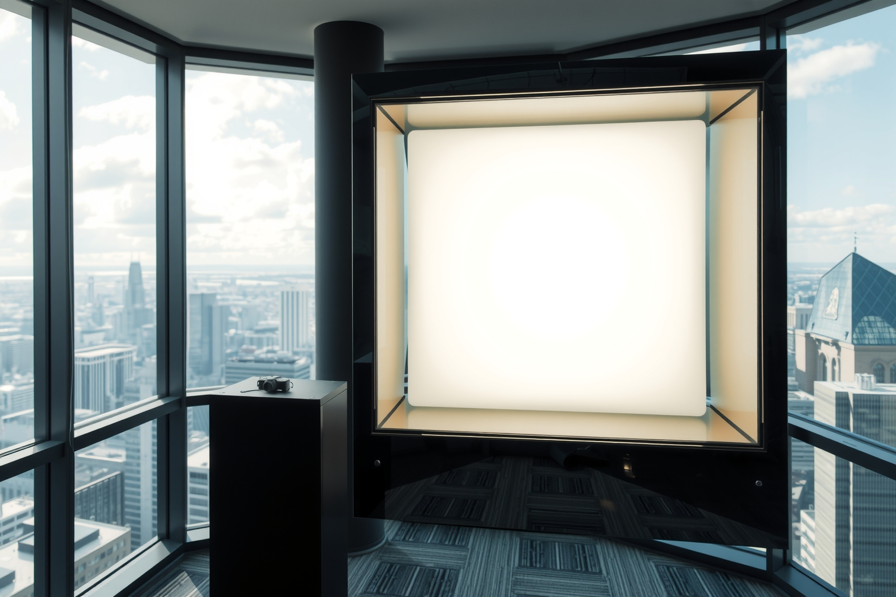

entropy c / a camera that cannot see
It looks into darkness. New York comes out.

The entire physical source is an ordinary capped camera. Sensor variation contributes to a seed. AI turns the seed and current public context into a unique imagined view of New York. The AI supplies spectacle—not entropy.

